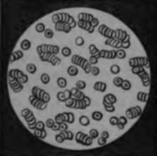

Chapter I. Introduction
Description
This section is from the book "Wonders Of The Human Body", by Auguste Le Pileur. Also available from Amazon: Wonders of the Human Body.
Chapter I. Introduction
Opinions of the ancients concerning the human body. Summary of general anatomy. Substance of the body or organized matter. Anatomical elements. Nutrition. Fluids. Tissues.
It has been said with truth, that the human mind, which can survey the heavens and calculate the motion and density of the stars, finds itself confounded when, returning from these distant journeyings, it enters its own proper dwelling-place. Man's own organization is still among those mysteries of nature which he is least able to penetrate, in spite of his incessant efforts to lift the veil which hides it In all ages he has sought to know himself; in all times he has studied the relations between his own existence and that of the world; and those universal influences which, though evident to him, are nearly all inexplicable in their action upon living beings.
Carried by their imagination into this way of comparing the human body with the rest of creation, Aristotle and some other philosophers saw in man an epitome of the wonders of the universe. He was for them the microcosm, the diminutive and summary of the entire world.
Paracelsus and the astrological doctors developed from their stand-point the ideas of the Greek philosophers, and pushed to its extreme limits the doctrine of sidereal influence upon man. According to them, the body had, like the earth, an axis and two poles; the head, the seat of the soul, corresponded to the heavens where divinity resided, etc.
Since that time, and especially in our own day, the imagination has given way to a rigorous method of study and to positive ideas. But whether we venturously follow Aristotle and Paracelsus, or whether we prefer the exact results of science to their poetic theories, we shall always see in the human body the highest and most perfect creation of nature among living beings, and we shall admire the efforts and the discoveries which the study of its organization has enabled the mind to make from the time of the masters of antiquity down to our own day.
In the human body, as in animals and in the vegetable kingdom, the organized matter is composed of what are termed proximate (or immediate) principles and anatomical dements. Of these proximate principles some are of mineral origin, as oxygen, water, the carbonates, the chlorides, the phosphates, etc. They penetrate the organism, and there furnish the materials, by the aid of which other principles of a different order are formed. These last essentially constitute the body, hence the name organic substances is specially applied to them. There is nothing in the mineral kingdom analogous to these organic substances, though they borrow their original elements from it They are solid or semi-solid (globuline, musculine), liquid or semi-liquid (fibrine, albumen, caseine), colouring or coloured (hematosine, biliver-dine). They decompose where they are formed, and give birth to another class of proximate principles. These last are of very different natures, and possess different attributes; they are acids, salts, alkaloids, fatty bodies; they are urea, creatine, stearine, cholesterine, and the sugar of the milk and of the liver, lactic acid, uric acid, etc.
This double and continuous movement of combination and resolution of proximate principles results in the formation of the anatomical elements. This is the term applied to very minute bodies, free or attached, which present special geometrical, physical, and chemical characters, as well as a structure which has no analogy to that of minerals. They are the smallest organic subdivisions of which the tissues and fluids are capable by anatomical analysis. Their reunion and combination form the solids and liquids of the organism. By assimilation they borrow their substance from the molecules of the proximate principles, while at the same time and in equal proportions they abandon other molecules of these same principles by a process of separation.
This assemblage of phenomena is termed nutrition. In this manner water, carbon, lime, phosphorus, iron, and the other principles, co-operate in forming globuline, fibrine, musculine, and the other organic substances, which by their combination constitute the anatomical elements of the blood, the muscles, the bones, the nerves, the body in a word; this is assimilation.
At the same time other molecules of the same principles, in equal proportions, abandon by a separatory process the substance of the organism, and unite to form the milk, saliva, tears, bile, and the other secretions, which are to be completely excreted as improper for nutrition, or partially thrown off and partially returned to the system.
As to the anatomical elements, some of them have a form which may be described, as globule, fibre, tube, and cell; others are amorphous, and serve to fill the spaces between those first-named.
We see therefore that the immediate or proximate principles and the anatomical elements constitute all organized matter whether solid or fluid.
The fluid portions of the human body greatly exceed the solid; they are computed at nine-tenths of the whole weight. -Water enters largely into the composition of these fluids, a portion of which only is contained in the vessels or reservoirs specially set apart for each of them, while the remainder penetrates the solid parts and forms part of their substance.
The term humours—fluids—is applied to the liquid or semi-liquid portions of the organism formed by the mingling and dissolution of immediate principles, and they ordinarily hold the anatomical elements in suspension. The solid portions are called tissues.
These fluids are classed, according to the part they play in the human economy, into constituent fluids, secreted fluids or secretions, excretions, and intermediate products, which partake of the nature of the other three. The constituent fluids are three in number—the blood, chyle, and lymph The blood is the nutritive fluid of the body; it contains all the immediate principles that are found in its organism. Incessantly renewed by digestion and respiration, it supplies to each organ assimilable matter, and to the special laboratories the materials for the secretions, and carries off the results of disassimilation which are to be thrown out of the organism. It is therefore at once a reparative and a purifying fluid. The term " fluid flesh," which has been applied to it, is incomplete, for it contains not only the muscular tissue, but the essential elements of all the other tissues are found in its mass.
Fig. 1. Blood seen under the microscope.
The blood is heavier than water, its specific gravity being 1052 to 1057, while that of water is 1000. In the blood vessels the blood is composed of—1st anatomical elements red and white corpuscles. 2d. Of a fluid, of which 779 parts in weight in 1000 are water in men, and in women 791 parts in 1000. This fluid is the plasma, the plastic substance the nourishing juice in which are found all the immediate principles of the blood. Among these principles are lime, ammonia, soda, potash, phosphorus, magnesia, iron and other metals in the form of salts; chlorides, sulphates, carbonates, phosphates, etc.; and mingled with these are the principles of the secretions and organic substances, of which the most important, from their quantity, are—fibrine, 2.5 parts in 1000, and albumen 69 to 70 in 1000.
The blood owes its colour to the red corpuscles, which are themselves coloured by a substance which De Blainville has named hematosine. and which contains 7 parts in 100 of iron. These corpuscles are round flattened disks of .oo6 to .007 of a millimetre in diameter, and a thickness of .002 millimetre. Under the microscope they appear grouped together without order, or piled one upon another like pieces of money, and are of a red colour in reflected light The white corpuscles are smooth, spherical, of a yellowish-white colour in a reflected light, and from .oo8 to .014 of a millimetre in diameter.
The colour of the blood is a beautiful crimson red in the arteries, but of a darker colour in the veins. We shall have occasion to examine it from this point of view in treating of the circulation.
When blood which has been drawn is allowed to stand in the vessel, it separates into two distinct parts: the one, semisolid, is called the crassamentum—the clot; the other fluid, is called serum. The clot is the coagulated fibrine which carries with it the red globules which were held in suspension in the blood. When the coagulation is delayed, these globules, being heavier than the other portions of the blood, fall toward the lower part of the vessel; and the fibrine, freed from them, coagulates and retains its own proper colour, and the clot is composed of two layers—the superficial layer is of a grayish or white colour and semi-transparent, and is termed the "buffy coat" It is formed of pure fibrine mingled with the white globules; the other is composed of fibrine and of the red globules which give it its colour. The serum is a transparent, greenish-yellow fluid, sometimes a little whitened by minute fatty specks; from which circumstance, and from some other points of analogy between them, it has been called the whey. It is a little less dense than the clot, and contains among other principles a great deal of albumen. The serum is the plasma without the fibrine.
The Chyle
The Chyle is a white opaque fluid closely resembling milk, which is separated from the food during the process of digestion, and is drawn by the chyliferous vessels from the surface of the smaller intestine, and serves to form the blood. As it advances toward the point where it mingles with the blood, it resembles this fluid more and more in its composition; it takes a roseate tint, and, if left to itself, it separates into fibrinous clot and albuminous serum.
The Lymph
The Lymph is a clear, transparent fluid, slightly tinted with green or yellow. Drawn from the organs by the lymphatic vessels, and especially from the skin and the surface of the mucous and serous membranes, the lymph is poured into the mass of blood by two principal canals. Like the chyle it contains white globules and minute specks of fat When extracted from the lymphatic vessels, it also separates into fibrinous clot and serum, containing a little albumen.
We see therefore that chyle and lymph are imperfect blood. The chyle leaves the digestive apparatus in a crude state, and goes to the blood-making laboratories for its perfection. The lymph comes from the extreme limits of the organs to these same laboratories, and, uniting with the chyle, is poured into the blood—the constituent fluid par excellence.
Continue to: